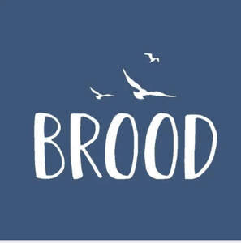
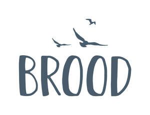

Trade Mark Journal No.2025/048 28 November 2025
UK00004263690 14 September 2025 (3,5,16,18,23,24,25,27,28,29,30,31,33,43,44)
Mark 1

Mark 2

- Class 3
- Bleaching preparations and other substances for laundry use; cleaning, polishing, scouring and abrasive preparations; soaps; perfumery, essential oils, cosmetics, hair lotions; dentifrices.
- Class 5
- Pharmaceutical and veterinary preparations; sanitary preparations for medical purposes; dietetic food and substances adapted for medical or veterinary use, food for babies; dietary supplements for humans and animals; plasters, materials for dressings; material for stopping teeth, dental wax; disinfectants; preparations for destroying vermin; fungicides, herbicides.
- Class 16
- Paper; cardboard; printed matter; bookbinding material; photographs; stationery; adhesives for stationery or household purposes; artists' materials; paint brushes; typewriters and office requisites (except furniture); instructional and teaching material (except apparatus); plastic materials for packaging (not included in other classes); printers' type; printing blocks.
- Class 18
- Leather and imitations of leather; animal skins, hides; trunks and travelling bags; handbags, rucksacks, purses; umbrellas, parasols and walking sticks; whips, harness and saddlery; clothing for animals.
- Class 23
- Yarns and threads, for textile use.
- Class 24
- Textiles and textile goods; bed and table covers; travellers' rugs, textiles for making articles of clothing; duvets; covers for pillows, cushions or duvets.
- Class 25
- Clothing, footwear, headgear.
- Class 27
- Carpets, rugs, mats and matting, linoleum and other materials for covering existing floors; wall hangings (non-textile); wallpaper.
- Class 28
- Games and playthings; playing cards; gymnastic and sporting articles; decorations for Christmas trees; childrens' toy bicycles.
- Class 29
- Meat, fish, poultry and game; meat extracts; preserved, dried and cooked fruits and vegetables; jellies, jams, compotes; eggs, milk and milk products; edible oils and fats; prepared meals; soups and potato crisps.
- Class 30
- Coffee, tea, cocoa, sugar, rice, tapioca, sago, artificial coffee; flour and preparations made from cereals, bread, pastry and confectionery, ices; honey, treacle; yeast, baking-powder; salt, mustard; vinegar, sauces (condiments); spices; ice; sandwiches; prepared meals; pizzas, pies and pasta dishes.
- Class 31
- Agricultural, horticultural and forestry products; live animals; fresh fruits and vegetables, seeds, natural plants and flowers; foodstuffs for animals; malt; food and beverages for animals.
- Class 33
- Alcoholic beverages (except beers); alcoholic wines; spirits and liqueurs; alcopops; alcoholic cocktails.
- Class 43
- Services for providing food and drink; temporary accommodation; restaurant, bar and catering services; provision of holiday accommodation; booking and reservation services for restaurants and holiday accommodation; retirement home services; creche services.
- Class 44
- Medical services; veterinary services; hygienic and beauty care for human beings or animals; agriculture, horticulture and forestry services; dentistry services; medical analysis for the diagnosis and treatment of persons; pharmacy advice; garden design services; artificial insemination of animals; animal fertility treatment services; animal in vitro fertilization services.
Claire Alison Catherine Davis